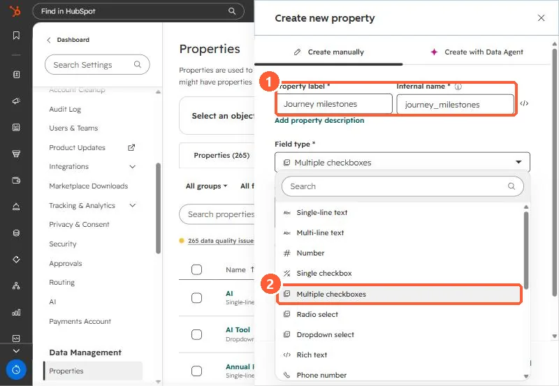

Short answer
Lifecycle stage holds one value, so it cannot show a company that is both renewing and expanding. In an agency's portal I created a Multiple checkboxes company property with one option per milestone and backfilled it from evidence only: no box was checked just because a later stage had been reached. Every check traced back to native HubSpot data. When importing values, HubSpot's semicolon rules decide whether you append to or replace existing checks.
1. Why a checkbox, not another dropdown
The agency's customer journey had 25 stages. It was linear through the early phases, then later phases ran at the same time and some overlapped. A dropdown records only the latest stage. A multiple checkboxes property records every milestone reached.
2. Create it
Open properties, create a property, and pick Multiple checkboxes. In my demo:


Give each option an internal name you will not need to change. Internal names cannot be edited after creation.
3. Backfill from evidence only
The rule we used: check a milestone only when native data proves it. Reaching a later stage did not check the earlier boxes automatically. That keeps the property honest for reporting, because each check can be traced to a deal, invoice, meeting, or date property.
4. Importing values
HubSpot's import rules for multiple checkboxes: values are separated by semicolons, the options must already exist, and a leading semicolon (;option1;option2) appends to existing values while no leading semicolon (option1;option2) replaces them.